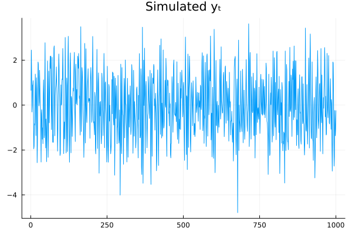
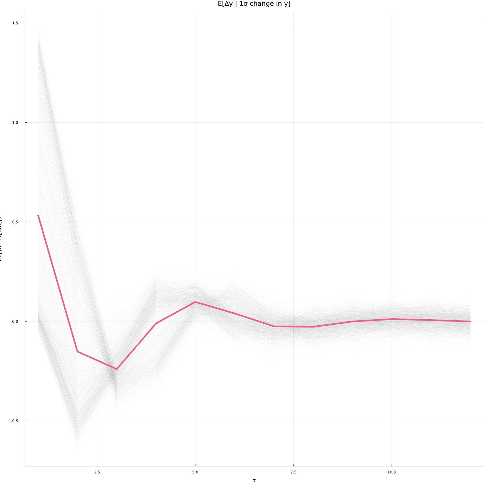

This work is licensed under a Creative Commons Attribution-ShareAlike 4.0 International License
About this document¶
This document was created using Weave.jl. The code is available in on github. The same document generates both static webpages and associated jupyter notebook.
Introduction¶
We have now covered a variety of neural network architectures and seen examples of how they are used for classic machine learning tasks. How can neural networks be incorporated into typical economic research?
There are two important differences between empirical economics and the digit classification and text generation examples we looked at:
-
Economic data has a lot more inherent uncertainty. In both images and text, we know there is a nearly perfect model (our eyes and brain). In economics, perfect prediction is almost never possible. For example, if we could predict stock prices even slightly more accurately than a random walk, then we could be billionares.
-
In part related to 1, economists care about statistical inference and quantifying uncertainty.
Both of these factors are going to make concerns about overfitting and model complexity more important.
This note will focus on one way to use neural networks in estimable economic models that allows inference. Inference directly on the nonparametric function fitted by a neural network is a very difficult problem. There are practical methods for Bayesian variational inference (see @graves2011 or @miao2016), but frequentist inference is largely an open problem.
However, what is possible is semiparametric inference. Semiparametric inference refers to when we have a finite dimensional parameter of interest that depends on some infinite dimensional parameter. Examples include average (or quantiles or other summary statistic) marginal effects, average treatment effects, and many others.
Double Debiased Machine Learning¶
We return to the semiparametric moment condition model of @chernozhukov2018 and @chernozhukov2017. We previously discussed this setting in ml-intro and ml-doubledebiased.
The model consists of
-
Parameter of interest $\theta \in \R^{d_\theta}$
-
Nuisance parameter $\eta \in T$ (where $T$ is typically some space of functions)
-
Moment conditions where $\psi$ known
See ml-intro and ml-doubledebiased for examples.
The estimation procedure will proceed in two steps:
-
Estimate $\hat{\eta}$ from a neural network
-
Estimate $\hat{\theta}$ from the empirical moment condition with $\hat{\eta}$ plugged in:
@chernozhukov2018 provide high level assumptions on $\hat{\eta}$ and the model that ensure $\hat{\theta}$ is $\sqrt{n}$ asymptotically normal.1 The key needed assumptions are:
- Linearizeable score
- (Near) Neyman orthogonality:
- Fast enough convergence of $\hat{eta}$: for $\delta_n \to 0$ and $\Delta_n \to 0$, we have $\Pr(\hat{\eta}_k \in \mathcal{T}_n) \geq 1-\Delta_n$ and
Assumption 1 is stated here mostly to define notation 3. A model where $\psi$ is not linearizeable would be unusual.
Assumption 2 must be satisfied by each application. In many models, the most obvious choice of $\psi$ will not satisfy 2. However, $\psi$ can be orthogonalized to satisfy 2.
Assumption 3 is about the convergence rate of our estimator for $\hat{\eta}$. It is written this way because it exactly what is needed for the proof; it is not intended to be easy to interpret or to verify. A sufficient, but not necessary condition that implies 3 is twice differentiability of $\psi$ and $\Er[(\hat{\eta}(x) - \eta_0(x))^2]^{1/2} = o(n^{-1/4})$.
Anyway, @chernozhukov2018 show that under these conditions (and if you use sample splitting in the empirical moment condition), then where and $\bar{\psi}$ is the influence function, with This is the same asymptotic distribution as if we plugged in the true $\eta_0$ instead of our estimated $\hat{\eta}$.
To apply this result to neural networks we need two things. First, we need to verify the rate condition (assumption 2). Doing so will involve conditions on the class of functions being estimated, and how the complexity (width and depth) of the neural network increases with sample size. The excellent paper by @farrel2021 (working paper @farrel2018) provides the needed results.
Second, we need to make sure our moment conditions are Neyman orthogonal. @chernozhukov2018 and @farrel2021 do this for some typical causal inference models. For other models, analytically transforming non-orthogonal moments into orthogonal ones is typically possible, but it can be tedious.
<!-- We will try to automate this. As we saw in -->
<!-- [GMMInference](https://schrimpf.github.io/GMMInference.jl), Julia's -->
<!-- good support for automatic differentiation will make it relatively -->
<!-- easy to translate econometric theory to executable code. -->
Deep Neural Networks for Estimation and Inference¶
Review results of @farrel2021.
Application: Average Impulse Responses¶
As an application let’s consider something like an average impulse response function. Suppose we have some time series data on $y_t$ and $x_t$. We want to estimate the average (over the density of $x$) response of $\Er[y_{t+\tau} | x_t]$ to a change in $x$ of size $\Delta$. That is, our parameters of interest are for $\tau = 0, …, R$ for some fixed $R$.
Note that there are other impulse response like parameters that could be estimated. For example, we could compute the average over $x_t$ of the change in future $y$ holding future residuals constant (or setting future residuals to $0$). In a linear model this would be the same as the average over residuals response that we estimate. However, in a nonlinear model, these three things differ. We focus on the average over residuals response in part because orthogonalization of the moment condition is more difficult for the later two.
Let $h(x_t) = (\Er[y_{t} | x_{t}], … , \Er[y_{t+R} | x_{t}])$ denote the conditional expectation functions at different horizons. Then, we can write a moment condition for $\theta_0$ as: However, this moment condition is not orthogonal. Its Frechet derivative with respect to $h$ in direction $v$ is
We can orthogonalize the moment condition by following the concentrating out approach described in @chernozhukov2018, or in ml-doubledebiased. It would be a good exercise to work through the steps. Here we will simply state a resulting orthogonal moment condition. Let $\eta=(h, f_x)$ where $f_x$ is the density of $x$. Define
Although somewhat difficult to derive, it is easy to verify that $\Er \psi$ is orthogonal. Notice that to achieve orthogonality, we had to introduce an additional functional nuisance parameter, $f_x$. This is typical in these models.
Simulated DGP¶
Let’s do some simulations to examine the performance of this estimator. The true model will be a nonlinear AR(3) model. In particular,
using Polynomials, Plots, LinearAlgebra, Statistics, Random
Random.seed!(747697)
T = 1000
R = 50
θ = 0.1
r = 0.99
# We start with an AR(P). We specify coefficients by choosing the
# roots of the AR polynomial. In a linear model, complex roots on the
# unit circle lead to non-vanishing cycles in y.
roots = [r*exp(im*θ), r*exp(-im*θ), 0.5]
p = prod([Polynomial([1, -r]) for r in roots])
α = -real(coeffs(p))[2:end]
function mean_y_fn(α, transform=(x)->x)
ylag->transform(dot(ylag, α))
end
function dgp(mean_y, T, sig=1, yinit=zeros(length(α)))
ylag = yinit
y = zeros(T)
for t in 1:T
y[t] = muladd(sig, randn(),mean_y(ylag) )
ylag[2:end] .= ylag[1:(end-1)]
ylag[1] = y[t]
end
return(y)
end
μy = mean_y_fn(α, x->1/r*tanh(x))
y = dgp(μy, T, 1.0)
plot(y, title="Simulated yₜ", leg=false)

R = 12
L = length(α)
Δ = 1.0*std(y)
nsim = 1000
iry=reduce(hcat,[mean(x->(dgp(μy , R, 1.0, y[i:(i+L-1)] .+ [Δ, 0, 0]) .-
dgp(μy , R, 1.0, y[i:(i+L-1)]) ), 1:nsim)
for i in 1:(T-length(α)+1)])./std(y)
plot(iry, leg=false, alpha=0.01, color=:black, linewidth=1)
plot!(mean(iry, dims=2), leg=false, linewidth=5, title="E[Δy | 1σ change in y]",
xlab="τ", ylab="ΔE[y(t+τ)]/std(y)", alpha=1)

The conditional average impulse responses at each $x_t=(y_{t-1}, …, y_{t-p})$ in the simulated data are in grey. The average over $x_t$ is the thicker green-ish line. In a linear model the average and conditional impulse responses coincide. In this model, they differ because of the nonlinearity.
Estimators¶
To somewhat simplify this exercise, we will assume that the researcher knows that $y$ follows a nonlinear AR(3) model. That is, we know that We will estimate $h$ using this knowledge. To estimate the impulse response, we need estimates of the conditional expectation of $y$ and the density of $x_t = (y_{t-1}, y_{t-2}, y_{t-3})$.
Density¶
We will estimate the density as the derivative of a feed forward network. We fit the a feed forward network to the empirical cdf. We penalize the estimated cdf for not being monotone. Here is code to fit the model.
using Flux, ProgressMeter, JLD2
import Base.Iterators: partition
L = length(α)
x = copy(reduce(hcat,[y[l:(end-L+l)] for l in L:-1:1])')
function fit_cdf!(model, x;
opt=Flux.NADAM(), maxiter=1000, batchsize=length(x),
λ = eltype(x)(1.0), n_extra=0)
# we could augment cdf evaluation points with x not seen in the data
# in 1-d, there is no need, but in multiple dimension, there's extra info.
i = 0
X = x
if (n_extra>0)
X=hcat(x, rand(x, size(x,1), n_extra))
end
ecdf = eltype(x).(mapslices( xi->mean(all(X .<= xi, dims=1)), X, dims=1 ))
Δ = gpu(diagm(fill(eltype(x)(0.01), size(x,1))))
monotone_penalty(x,cdf) = λ*sum(δ->sum( relu.(model(x) .- model(x .+ δ))), eachcol(Δ))
loss(x,cdf) = Flux.mse(model(x), cdf) + monotone_penalty(x, cdf)
@show bestloss = loss(X,ecdf)+1
lastimprove=0
p = Progress(maxiter, 1)
data = [(X[:,p], ecdf[:,p]) for p in partition(1:size(X,2), batchsize)]
for i in 1:maxiter
Flux.train!(loss, Flux.params(model),
data, opt)
obj = loss(X, ecdf)
next!(p)
(i%(maxiter ÷ 10) == 0) && println("\n$i : $obj")
if (obj < bestloss)
bestloss=obj
lastimprove=i
end
if (i - lastimprove > 100)
@warn "no improvement for 100 iterations, stopping"
break
end
end
return(model)
end
fit_cdf! (generic function with 1 method)
We can recover the pdf from the cdf by differentiating. For univariate distributions, this is easy. However, for multivariate distributions, so we need to evaluate an $n$th order derivative. Here is some code to do so.
using ForwardDiff
function deriv_i(f, i)
# derivative wrt to ith argument
dfi(z)=ForwardDiff.derivative((y)->f([z[1:(i-1)]..., y, z[(i+1):end]...]), z[i])
end
function make_pdf(cdf, dim)
fs = Function[]
push!(fs, x->cdf(x))
for i in 1:dim
push!(fs, deriv_i(fs[end], i))
end
function f(x::AbstractVector)
fs[end](x)
end
function f(x::AbstractMatrix)
mapslices(fs[end], x, dims=1)
end
return(f)
end
make_pdf (generic function with 1 method)
To check that the code produces reasonable results, we will begin by just fitting the marginal distribution of $y_t$. This isn’t quite what we need for our impulse responses, but it is easier to visualize.
modelfile=joinpath(docdir,"jmd","models","cdfy.jld2")
rerun=false
if isfile(modelfile) && !rerun
@load modelfile cdfy
else
cdf_model = Chain(
Dense(1, 8, Flux.σ),
#Dense(32, 16, relu),
#Dense(16, 8, relu),
Dense(8, 1, Flux.σ)
) |> gpu
fit_cdf!(cdf_model, gpu(reshape(y, 1, T)),
maxiter=10000, batchsize=1000)
# The next line converts the parameters of the model to Floats instead
# of Tracked.
cdfy = cpu(cdf_model)
@save modelfile cdfy
end
pdfy = make_pdf(cdfy, 1)
fig=histogram(y, bins=100, normalize=:pdf)
fig=scatter!(y, pdfy(reshape(y,1,T))[:], leg=false)
Error: Scalar indexing is disallowed.
Invocation of setindex! resulted in scalar indexing of a GPU array.
This is typically caused by calling an iterating implementation of a method
.
Such implementations *do not* execute on the GPU, but very slowly on the CP
U,
and therefore are only permitted from the REPL for prototyping purposes.
If you did intend to index this array, annotate the caller with @allowscala
r.
The estimated pdf looks pretty good.
We will estimate the joint cdf and pdf similarly.
rerun=false
modelfile=joinpath(docdir,"jmd","models","cdfx.jld2")
if isfile(modelfile) && !rerun
@load modelfile cdfx
else
cdf_model = Chain(
Dense(3, 32, Flux.σ),
Dense(32, 16, Flux.σ),
Dense(16, 8, Flux.σ),
Dense(8, 1, Flux.σ)
) |> gpu
@time fit_cdf!(cdf_model, gpu(Float32.(x)), opt=NADAM(),
maxiter=50000, batchsize=1000, λ=10.0f0, n_extra=10000)
# The next line converts the parameters of the model to Floats instead
# of Tracked.
cdfx = cpu(Flux.mapleaves(Flux.data, cdf_model))
@save modelfile cdfx
end
pdfx = make_pdf(cdfx, size(x,1))
@show sum(pdfx(x).<0)
histogram(pdfx(x)', bins=100, leg=false, title="Histogram of estimated pdf(x)")
Error: Scalar indexing is disallowed.
Invocation of getindex resulted in scalar indexing of a GPU array.
This is typically caused by calling an iterating implementation of a method
.
Such implementations *do not* execute on the GPU, but very slowly on the CP
U,
and therefore are only permitted from the REPL for prototyping purposes.
If you did intend to index this array, annotate the caller with @allowscala
r.
Despite the penalty, our estimated pdf is sometimes negative. Fortunately, it doesn’t happen to often.
It’s hard to visualize the estimated trivariate pdf, but we can plot the marginal pdf implied by the joint distribution. We can get marginal pdf by integrating or looking at the derivative of the joint cdf. where $\overline{x}_k$ is the maximum of the support of $x_k$.
pdf12=make_pdf(cdfx,2)
pdf1=make_pdf(cdfx,1)
px1=pdf1(vcat(x[1,:]', maximum(y)*ones(2, 998)))
histogram(x[1,:], bins=100, normalize=:pdf)
scatter!(x[1,:], px1[:], leg=false)
Error: UndefVarError: cdfx not defined
The marginal pdf implied by the joint cdf looks pretty good.
Note, however, that to get this result, I had to specify a fairly complex network, which took around 20 minutes to fit. There are many other ways to estimate densities, and it seems to me that another approach might have made more sense here.
Conditional expectation¶
We will assume that we that knows that $y$ follows a nonlinear AR(3) model. Then, we can simply fit a feed forward network to predict $y_t$ given $x_t = (y_{t-1}, y_{t-2}, y_{t-3})$.
function fit_ce!(model, x, y;
opt=Flux.NADAM(), maxiter=1000, batchsize=length(y))
loss(x,y) = Flux.mse(model(x), y)
@show bestloss = loss(x,y)+1
lastimprove=0
p = Progress(maxiter, 1)
data = [(x[:,p], y[:,p]) for p in partition(1:size(x,2), batchsize)]
for i in 1:maxiter
Flux.train!(loss, Flux.params(model),
data, opt)
obj = loss(x,y)
next!(p)
(i%(maxiter ÷ 10) == 0) && println("\n$i : $obj")
if (obj < bestloss)
bestloss=obj
lastimprove=i
end
if (i - lastimprove > 100)
@warn "no improvement for 100 iterations, stopping"
break
end
end
return(model)
end
R = 12 # how many periods ahead to fit
Y = copy(reduce(hcat,[y[(L+r):(end-R+r)] for r in 1:R])')
X = x[:,1:(end-R)]
modelfile=joinpath(docdir,"jmd","models","ce.jld2")
rerun=false
if !isfile(modelfile) || rerun
ce_model = Chain(Dense(size(X,1), 8, relu),
Dense(8, 8, relu),
Dense(8, size(Y,1))) |> gpu
fit_ce!(ce_model, gpu(Float32.(X)), gpu(Float32.(Y)), opt=Flux.NADAM(),
maxiter=20000, batchsize=size(Y,2))
cpum = cpu(ce_model)
@save modelfile cpum
end
@load modelfile cpum
ce_model = gpu(cpum)
μhat(x) = let m=cpu(ce_model)
m(x)
end
μhat(x::AbstractVector) = let m=cpu(Flux.mapleaves(Flux.data, ce_model))
eltype(x)(m(x)[1])
end
bestloss = loss(x, y) + 1 = 2.9970849f0
2000 : 1.6363429
4000 : 1.619115
6000 : 1.6138682
8000 : 1.612884
10000 : 1.6124394
12000 : 1.6119322
14000 : 1.6117342
16000 : 1.6112732
μhat (generic function with 2 methods)
Finally, we can calculate the orthogonalized impulse responses. As stated above, these are given by
Let’s compute it
L = size(x,1)
Δ = 1.0*std(y)
iryhat=(μhat(X .+ [Δ; 0; 0]) .- μhat(X))
fx(x) = pdfx(x) #max.(pdfx(x), 1e-6)
ℓ(x) = (fx(X) .- fx(X .- [Δ; 0; 0]))./fx(X)
lx = ℓ(x)[:]
c = quantile(lx, [0.02, 0.98])
idx = Int.(findall((c[1] .<= lx) .& (lx .<= c[2])))
θi = μhat(X .+ [Δ; 0; 0]) .- μhat(X) .+ (Y .- μhat(X)).*ℓ(X)
#θi = θi[:,idx]
Error: UndefVarError: pdfx not defined
and plot it
plot(iry, leg=false, alpha=0.02, color=:black, linewidth=1)
plot!(iryhat, leg=false, alpha=0.02, color=:orange, linewidth=1, ylim=(-0.5, 0.75))
#plot!(θi, leg=false, alpha=0.01, color=:green, linewidth=1, ylim=(-0.5, 0.75))
plot!(mean(iry, dims=2), leg=false, linewidth=5, title="Average Impulse-Reponse to 1σ change in y[t-1]",
xlab="τ", ylab="ΔE[y(t+τ)]/std(y)", color=:blue)
plot!(mean(iryhat, dims=2), leg=false, linewidth=5, color=:orange)
plot!(mean(θi, dims=2), leg=false, linewidth=5, color=:green)
Error: UndefVarError: θi not defined
The true average impulse response is in blue. The uncorrected estimate is in orange. The orthogonalized estimate is in green.
Depending on the luck of RNG, and how well I have chosen the network architectures, the orthogonalized or naive point estimate might look better. However, the motivation is the orthogonalization is not so much to improve point estimation (although it does that as a side effect), but to enable inference.
Inference¶
Inference for the orthogonalized estimator is very simple. Due to the
orthogonalization, we can treat μhat and fx as though they are known
functions. The estimated average impulse response is then just a sample
average. Computing standard errors for sample averages is
straightforward. Since this data is dependent, we will use a HAC
estimator for the variance.
using Distributions
using CovarianceMatrices # need dev version
k = BartlettKernel{NeweyWest}()
Σ = lrvar(k, θi', prewhite=true)
plot(iry, leg=false, alpha=0.02, color=:black, linewidth=1)
plot!(iryhat, leg=false, alpha=0.02, color=:orange, linewidth=1, ylim=(-0.5, 0.75))
#plot!(θi, leg=false, alpha=0.01, color=:green, linewidth=1, ylim=(-0.5, 0.75))
plot!(mean(iry, dims=2), leg=false, linewidth=5, title="Average Impulse-Reponse to 1σ change in y[t-1]",
xlab="τ", ylab="ΔE[y(t+τ)]/std(y)", color=:blue)
plot!(mean(iryhat, dims=2), leg=false, linewidth=5, color=:orange)
plot!(mean(θi, dims=2), leg=false, linewidth=5, color=:green,
ribbon=sqrt.(diag(Σ)/size(θi,2))*quantile.(Normal(), [0.05, 0.95])' )
Error: UndefVarError: θi not defined
The plot now has 90% pointwise confidence bands around the orthogonalized estimates.
Automating Orthogonalization¶
A downside of the above approach is it requires an orthogonal moment conditioon for each parameter of interest. Analytic orthogonalization is labor intensive, error prone, and may not even be possible in some cases. @ceinr2016 review some techniques for constructing orthogonal moments.
@cnr2018 have a mathematically elegant method for automatically constructing orthogonal moments. The focus on estimators that are linear in their nonparametric component. where $\gamma(x)$ is an estimate of $\Er[y|x]$, $m()$ is a known function, $m$ is linear in $\gamma$, and $\theta \in \R$. If we focus on one horizon, our example above falls into this setup. Anyway, since $m$ is linear, $\gamma \to \Er[m(x,\gamma(x))]$ is a linear functional. If $\gamma \in V$, a vector space of functions, then by definition, $\exists \alpha^\ast \in V^\ast$ such that for all $\gamma \in V$. Without more structure on $V^\ast$, this is little more than alternate notation for $\Er[m(x,\gamma(x))]$. Fortunately in most applications, an appropriate space for $\Er[y|x]$ is $V=\mathcal{L}^2(P_x)$. In this case, $V = V^\ast$, and we know that $\alpha^\ast$ is of the form
In the example from the previous section, $\alpha^\ast$ can be explicitly calculated. It is In the new notation of this section, the orthogonal moment condition we used in the previous section becomes It is straightforward to verify that this moment condition is orthogonal for any $m$ that is linear in $\gamma$.
The above observations can be turned into an estimator by first fixing an approximing space for $V$, $V_n$ (e.g. the set neural network with a given architecture). Then estimate $\gamma$ as above Estimate $\alpha$ by solving @cnr2018 work with $V_n$ that are linear in parameters, which helps simplify the estimation of $\alpha$. A practical and efficient method for estimating $\alpha$ with neural networks would require some thought.
Finally, plug-in the estimates of $\gamma$ and $\alpha$ and take an average to compute $\hat{\theta}$.
-
@chernozhukov2018 also give low level conditions on lasso estimates of $\hat{eta}$ that meet the high level assumptions. ↩